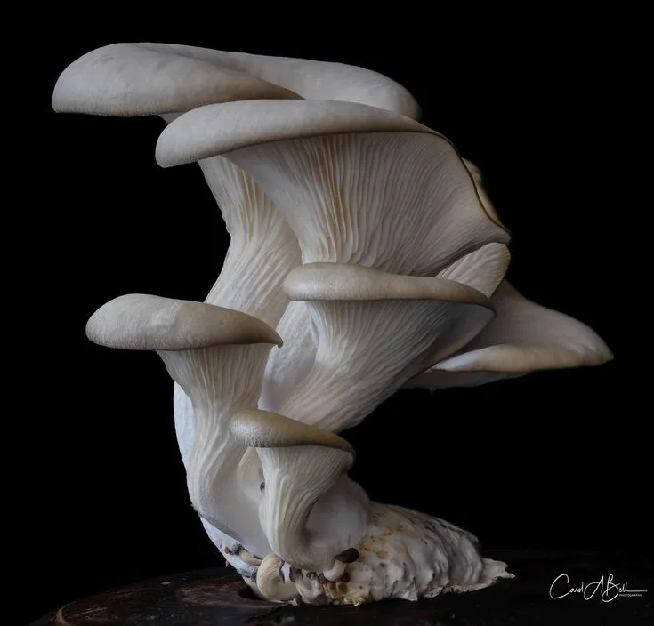

Every harvest
is an edition.
H1 / 68 / 0.99Remarkable produce.
H3 / 38 / 1.10Harvested this morning.
Cultivated Editorial · Approved direction
A warm, editorial system for remarkable produce—premium through specificity, authentic through evidence, and practical across household and restaurant contexts.

01 · Principles
These principles resolve ambiguity before visual taste does.
Name the variety, harvest state, texture, use and source.
Place provenance and operating facts beside the claim they support.
Typography, rules and color frame food; they never compete with it.
Availability, substitutions and lead times are made clear early.
02 · Foundations
The palette avoids default “organic green.” Soil brown anchors trust, clay brings appetite, saffron marks a harvest moment, and grain surfaces keep the system warm.
Select a swatch to copy its value.
Every harvest
is an edition.
Warm, direct language gives useful detail without turning every product into a lecture.
Body / 16 / 1.60 — Oyster mushrooms with silken texture, savoury depth and delicate edges. Best seared quickly over high heat.
READY NOW · 200 G · HARVESTED TODAY
4 · 8 · 12 · 20 · 32 · 48 · 72 · 96
0 · 8 · 10 · 14 · pill by exception
140ms micro · 220ms standard · 360ms emphasized
03 · Components
The same visual language must support appetite, confidence and dense operating information. Every component specifies states—not just its ideal appearance.
04 · Patterns
Switch the specimen to see how hierarchy changes without changing the underlying design language.
Household product card
Lead with appetite and cooking use, then show harvest evidence, pack size and availability before asking for action.
 Ready now
Ready nowPeppery, crisp and vivid. Finish chaat, eggs or salads just before serving.
05 · Voice
WeGroween sounds like a knowledgeable grower and a thoughtful food editor—not a wellness advertisement.
“Supercharge your health with our premium greens!”
Write“Peppery radish greens, harvested this morning.”“Out of stock.”
Write“This bed is resting. Join the next harvest list.”“Best quality guaranteed.”
Write“Packed within twelve hours of harvest.”06 · Governance
Source of truthdesign-tokens.json controls visual values.
AccessibilityWCAG 2.2 AA, visible focus, 44px targets, text-supported states.
Change ruleNew visual values require a token and a documented decision.
Current boundaryThis package defines the system only. Application behavior is future work.